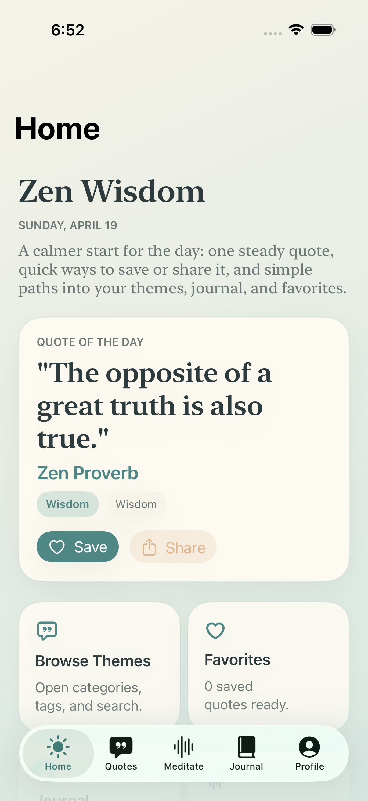
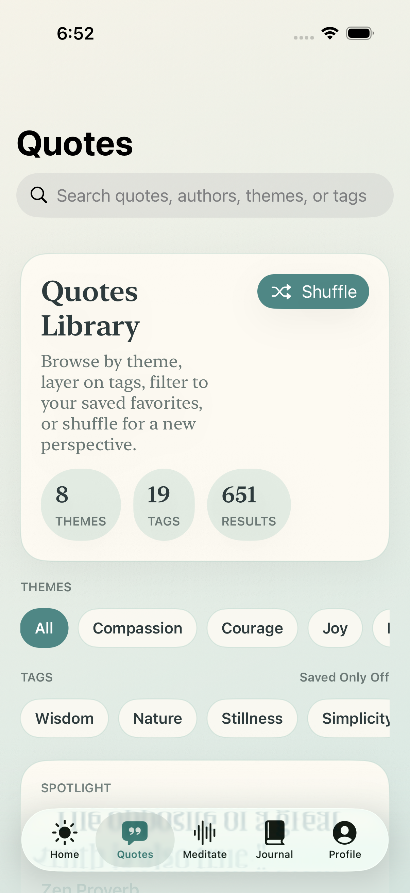
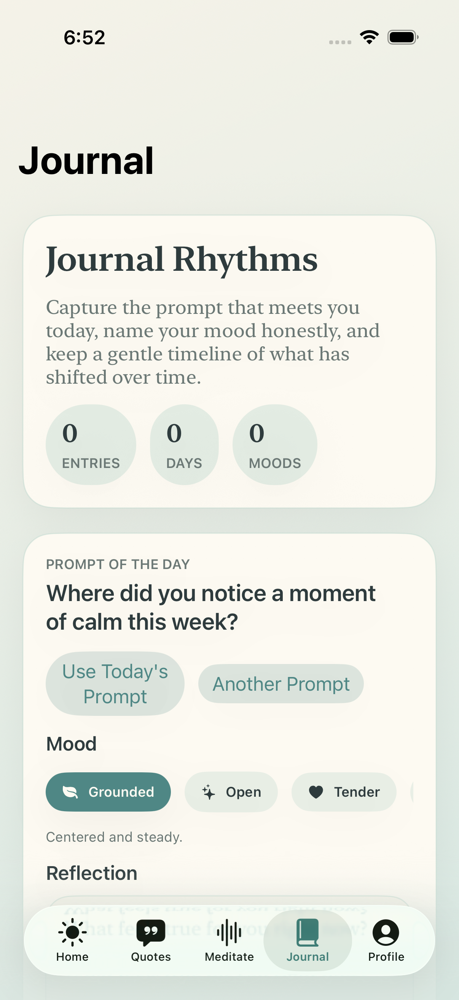

Start with a deterministic quote of the day, then save, share, or continue into favorites and themes.
iPhone meditation and reflection
A steadier daily rhythm built from one quote, one breath, and one honest note at a time.
Zen Wisdom is an iPhone-first reflection app centered on a quote of the day, themed quote discovery, starter guided sessions, favorites, and local journaling that stays close to you.
Quote of the Day
Starter Guided Sessions
Local Journal History
Theme and Font Customization
App Store release in progress. The current build targets iPhone on iOS 17+, supports English and Spanish, and uses a starter premium scaffold while live StoreKit setup is finalized.
Quote of the Day
“Peace comes from within. Do not seek it without.”
Calm
Presence
Today’s flow
- Browse themed quotes
- Resume Breath Reset
- Write a short reflection
Built from the real app scope
What Zen Wisdom already does today
The current repo snapshot ships a complete SwiftUI shell for calm daily use: curated quote browsing, local favorites, guided audio playback, reflection history, and appearance settings that persist on device.
Launch build includes a free grounding session, a premium-ready preview, and local progress persistence.
Prompts, mood tags, and day-by-day history are stored on device instead of behind an account wall.
A calm user journey
From daily quote to deeper reflection
The site gallery follows the same flow as the app: begin at the home ritual, explore the quote library, then settle into meditation or journaling when you want a little more room.

Daily landing ritual
See the day’s quote, save what resonates, and move into favorites, journal, or meditation without friction.

Themed quote discovery
Browse by category, combine tags, filter to saved quotes, and shuffle into a fresh perspective.

Quiet journaling and progress
Write from a prompt, track your mood, and keep a gentle local history that stays tied to your device.
Home
Quote of the Day, favorites, and sharing
Zen Wisdom opens with one clear focal point and simple actions that help useful quotes stay close by.
Meditate
Starter guided sessions with local progress
Resume a breathing track, track completion, and keep the premium pathway ready without overpromising a large library yet.
Profile
Appearance that feels personal
Switch themes, backgrounds, and typography so the app can feel bright, warm, or quieter depending on the moment.
Privacy
Local-first by design
Journal entries, favorites, meditation progress, and appearance settings stay on device in the current build.
Release state
Prepared for hosting now, ready for launch polish next
This site package is ready for the public GitHub repo at github.com/NinjaTomOnline/zenwisdom-site. The remaining launch steps are publishing the exported bundle to that repo, enabling GitHub Pages if needed, and swapping to a custom domain later if you want one.